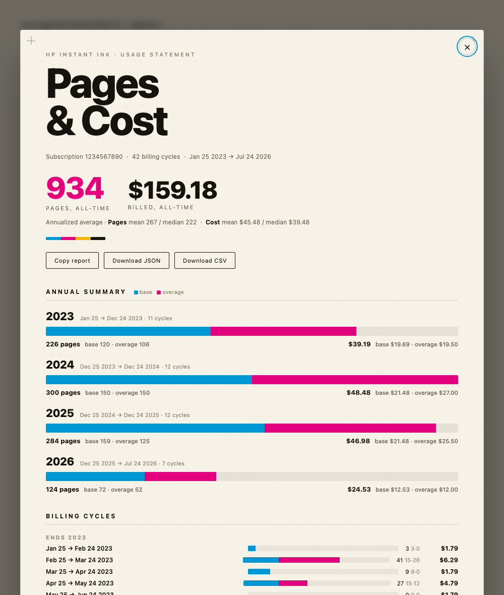

A one-click button that shows your whole HP Instant Ink history — how many pages you've printed and what you paid each year, split into base plan vs. overage. It runs in your own browser using the HP login you already have.
Add the bookmarklet above to your bookmarks bar, open your HP Instant Ink Print and Payment History page while signed in, and click it. A report shows the pages you've printed per month and per year.
No. It uses the HP login session already in your browser and never sees, asks for, or stores your password.
No. Everything runs locally in your browser. The only site it talks to is HP's own dashboard. CSV and JSON downloads save straight to your computer.
Yes — free and open source, released into the public domain (CC0 1.0). You can read every line of the source code on GitHub before using it.
Free & open source (public domain). Want the details, the code, or to see exactly what it does? Read more on GitHub →
